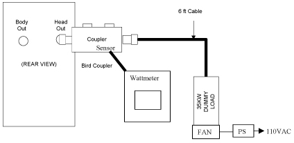
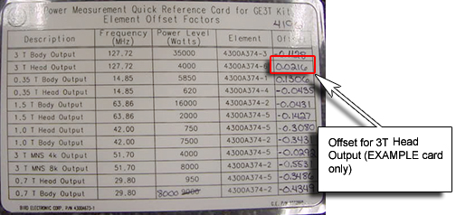
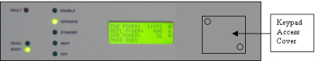

Operating Documentation
Direction 5440000, Rev# 5
Signa HDxt Service Methods
Module Version 2.0, Version Date 11/17/08
Operating Documentation |
| Required Persons | Preliminary Reqs | Procedure | Finalization |
|---|---|---|---|
| 1 | Not Applicable | 45 mins | 5 mins |
| Item | Qty | Effectivity | Part# | Manufacturer | |
|---|---|---|---|---|---|
| Power Measurement Kit (Wattmeter Kit) | 1 | - | 2372868 | - | |
| Medium Phillips Screwdriver | 1 | - | - | - | |
| 12 in. Crescent Wrench | 1 | - | - | - | |
| ||||
| FATAL ELECTRIC SHOCK HAZARD | ||||
| THE RF AMPLIFIER IS NOT DISABLED | ||||
| TO PREVENT FATAL ELECTRIC SHOCK, ENSURE THE RF AMPLIFIER IS DISABLED WHILE CONFIGURING THE CALIBRATION TOOLS. |
| ||||
| Property Damage! Prevent Coil And Associated Switch Damage, By Removing All Phantoms And Hardware (I.E., Head Coil, Surface Coil...) From The Magnet Bore | ||||
| ||||
| Possible equipment damage. Do not operate the RF amplifier with an improper load connected to its output. Doing so may permanently damage the amplifier | ||||
| ||||
| Possible equipment damage. Do not connect/disconnect Wattmeter Sensor while Meter is ON. Always turn Meter OFF prior to plugging/unplugging Sensor. | ||||
Verify that the system is idle and all coils have been removed from magnet bore.
Remove the front cover of the EXCITE Systems Cabinet.
On the front of the Driver Module, disable T/R error reporting by setting the TR switch to the DISABLE (disable faults) position. (see Illustration 1).
Illustration 1: Driver Module Switch

| NOTE: | HV, DD and MC should remain set to Enable. |
Insert the 5000W Element into the Forward Sensor Port, (Blue- 4300A374-6). Make sure the arrow on the element points in the direction of the arrow (from Input to Output) on the Sensor. Lock Element in place using the locking tab on the sensor. (see Illustration 2)
Illustration 2: RF Coupler Setup For Head Mode

Insert the 50KW Element into the Reflected Sensor Port. (Blue- 4300A374-3). Make sure the arrow on the element points in the opposite direction of the arrow on the Sensor. Lock Element in place using the locking tab on the sensor. (see Illustration 2) The reflected port is not used during this procedure. Placing the 50kW element into the reflected port is just a safety measure.
Verify scanner is in “idle”, turn off RF Enable at the exciter (FP-I/O board) or disconnect J14 (RF Drive input) from the back of the RF amplifier.
Disconnect the Head cable J3 “Head Output” from the back of the RF Amplifier.
To protect the Body hybrid and amplifier section, disconnect the Body cable J4 “Body Output” from the back of the RF Amplifier as well.
Connect the Input of the Coupler to J3 of the RF Amplifier. (Note: Some new RF Kits may require using the HN to 7/16 adapter included in the kit. (see Illustration 3)
Illustration 3: Connection of RF Coupler to Head Output

Connect the RF Coupler output to the Dummy Load ((see Illustration 4)).
Illustration 4: Complete Head Output Test Setup

Connect one end of the Wattmeter cable to the Wattmeter sensor output. (RS232 is unused). Connect the other end to the coupler.
Make sure to plug the fan for the dummy load into a service outlet in the System Cabinet. AT NO TIME should you use this dummy load without its fan running.
| ||||
| DO NOT APPLY RF POWER TO THE DUMMY LOAD WITHOUT ITS FAN IN OPERATION. DOING SO WILL RESULT IN CATASTROPHIC DAMAGE TO THE DUMMY LOAD. | ||||
Reconnect J14 on the back of the amplifier (if disconnected) or switch RF Enable to ON.
For more information on the Watt Meter, see Watt Meter (2372868) Introduction.
Press the ON button on the Wattmeter. (If coupler and sensor is not correctly attached to the amplifier you will get a “No Sensor” indication).
Select the  arrow button under Scale.
arrow button under Scale.
Type: 5000< Enter> to set the range.
Check the setting, by selecting the arrow button under Scale once again.
Press Enter to exit this mode.
Select the arrow button under Fwd Units make sure
the scale reads “W” (or “kW “on some watt
meters). If the scale reads dBm, select the arrow button under Fwd Units again, to toggle the scale to read “W”
(Watts or kW kiloWatts) on the TOP, Forward Power scale. Ignore the
BOTTOM, reflected Power scale value. It is not used during Maximum
Power Calibration.
Select the <Shift> button.
Select the arrow button under Setup.
Verify it reads “43”. If not, type the number “43” followed by the enter button. (Illustration 5 shows what should be displayed at this time).
Illustration 5: WATTMETER DISPLAY SET TO READ PEAK POWER SENSOR

| NOTE: | This action displays the Sensor Type configured in the Wattmeter. This procedure uses Sensor” Type 43”, which is optimized for peak power measurement. |
Select <Enter> button.
Select the arrow button under Type, change unit of measurement to Peak.
Some kits require an offset to ensure accurate measurement. Locate the Element Offset Factors card in the kit and view the offset for 3T Head Output. See Illustration 6.
Illustration 6: Element Offset Factor Card

If an offset exists, press the Offset Button on the wattmeter. Enter in the value that was displayed on the kits offset card and press enter. (Illustration 7 shows what should be displayed at this time).
Illustration 7: Wattmeter Set To Display Peak Power And Watts

The meter is now configured to read RF Peak Power, in Watts for the Head Maximum Output calibration.
| ||||
| Property Damage! Prevent coil and associated switch damage, by removing all phantoms and hardware (i.e., Head Coil, surface Coil...) from the magnet bore. | ||||
Prepare the system to scan in head mode:
Click on [New Pt]
Id: geservice<Enter>
Name: apb cal Head<Enter>
Weight (Lb): 300<Enter>
Set Patient Protocols to [Service]
Select [Other] and scroll through the protocol field until you find the protocol [3.0T apb cal].
Select [Series 2, Head]
[Accept].
Set Landmark
[Save Series]
Select [Research Options] with the mouse cursor, and right click. Then select [Setup Params]. Set TG to 180[Done].
Select [Research Options] with the mouse cursor, and right click, select [Display CVs] From the drop down menu.
Set value of CV calmode to 5<Enter> (Dual Logamp Waveform). (Make sure to press <Enter> to capture the setting.
Select [Accept].
Right click on [Research Options] with the mouse cursor, and then select [Download].
Go to the amplifier and remove the Keypad cover, located on the front of the amplifier near the display.
Illustration 8: FRONT OF RF AMP CONTROL MODULE

This section adjusts the Solid State Amplifier gain of the Solid State pre-amplifier (VVA Setup) and if necessary, also adjusts the Attenuation of the IPA stage, (ATTN Setup). The Gain (VVA- Variable Voltage Adjustment) of the Solid-state amplifier is setup first, maximizing its output. The Attenuation of the IPA stage can also be adjusted to “Fine tune” the final value to as close as possible to 4000 Watts, (4000-4100 Watts) .VVA Setup and ATTN Setup interact with each other, and you may find yourself jumping back and forth between these adjustments until the amplifier is properly calibrated.
Illustration 9: Process Flow

Select [Manual Prescan].
Select [Scan TR].
Set the Transmit Gain to 180. Make sure everything is functioning normally and you are getting a reading on the Wattmeter. Allow scanner to pulse at TG 180 for 6 minutes. This is due to the drop in gain that occurs over the 6 minutes period.
Slowly increase the TG to 200. (If the amplifier trips set the TG at its highest setting). Resume the procedure at Step .
| ||||
| Press Only The Buttons Required By This Procedure. Avoid Pressing Mode Button. It Controls The Output Drive Of The Solid State Amplifier, Switching From Body To Head Mode Of Operation. For information on the key pad, see Keyboard Operation / Description of IPA and PA Stages. | ||||
Refer to Illustration 10. While the system is pulsing RF, Press the <Menu> Button on the Keypad located inside the RF amplifier, until the LCD Display on the front of the amplifier reads the following:
> ATTN SETUP
VVA SETUP
Illustration 10: RF SETUP KEYPAD

Press <Down Arrow> to select VVA SETUP shown below:
ATTN SETUP
>VVA SETUP
Press <Enter>.
Continue to press the<Enter> button until the desired step size has been selected. For smaller and finer calibration use smaller incremental step sizes such as 1 or 10. (Step size values can be set to 1,10,20,30,40,50,60,70,80,90,or 100).
Once the Step Size is selected, Press <Down> or <Up> arrow to actually adjust the Gain:
VVA Step: 10
>VVA: 3368 (This value will change by 10 counts)
Using the Down/Up arrows resume the adjustment of the gain until you have achieved 4000 Watts (Approx. 4000-4100 Watts) on the meter.
If 4000Watts can be achieved on the meter display, press the [Menu] button until the keypad is reset to read Forward and Reflected Power.
| NOTE: | If you are still not able to achieve the proper maximum Wattage setting, you may need to adjust the IPA stage Attenuation, see Step . |
Proceed to Step .
This section only needs to be performed if you can’t achieve 4000 Watts (Approx. 4000-4100 Watts) with VVA SETUP. (Note: At this time the RF amplifier is still pulsing at TG of 200)
Press the <Menu> Button until the LCD Display on the front of the amplifier reads the following:
>ATTN SETUP
VVA SETUP
Select <Enter>.
> ATTN: 13 (This value will change when the down/up arrows are pressed)
Press the <Down> or <Up> arrows while watching the Wattmeter to adjust the attenuation of the RF amplifier PA stage. Slowly attenuate the RF power to as close to 4000 Watts as you can. If you cannot achieve 4000 Watts, adjust the attenuation to a value that is below 4000 Watts.
Press the <Menu> button to exit.
Press the <Menu> button until amp displays Forward and Reflected power readings.
| NOTE: | The RF amplifier should still be producing RF at a TG of 200. |
As a quick check, look at the LCD display on the front of the amplifier. It should be reading 4000 + or - approximately 600 Watts. This will vary site to site and can be used as a confidence indicator as to the actual setting. The LCD display should not be relied on as an accurate measurement device.
Stop [Manual Prescan].
Press the <Menu> button multiple times until the original screen on the amp LCD reappears.
Press the Off button. This will STORE the value in NVRAM. Wait 30 seconds and press the “Operate” (Or “standby) button. Wait another 30 seconds for the amplifier to react to the new settings.
Reduce the TG to zero, once the RF Output is calibrated to specification. If the Amplifier is setup correctly, the RF amplifier Display, and Wattmeter should be very close to the same value.
Test the new Maximum Power value by restarting [Manual Prescan].
Select [Scan TR].
Slowly increase the TG to 200. The system should not trip.
Take a final look at the Wattmeter display; making sure the desired value is displayed.
Reduce TG to Zero.
Stop [Manual Presecan]
Continue with Finalization, Step 1.
| ||||
| ELECTRICAL/RF BURN HAZARD | ||||
| RF BURNS Can Occur AS A RESULT OF DISCONNECTING HELIAX CABLES WHILE THE SYSTEM IS SCANNING | ||||
| PREVENT POSSIBLE RF BURNS WHEN DISCONNECTING HELIAX CABLES FROM J3 OR J4 ON THE RF AMP BY VERIFYING THAT THE SYSTEM IS NOT MANUALLY PRESCANNING OR SCANNING. VERIFY THAT THE SCAN DESKTOP ICON DISPLAYS THE “IDLE” MESSAGE AND THE RF ENABLE SWITCH IS IN THE "OFF" POSITION |
| ||||
| Possible equipment damage. Do not turn connect/disconnect Wattmeter Sensor while Meter is ON. Always turn Meter OFF prior to plugging/unplugging Sensor | ||||
Before proceeding, perform a [Reset TPS]. This is to ensure that the RF Amplifier is in a known state to the system.
Perform UPM (Universal Power Monitor - Head Setup and Calibration) to ensure the UPM is properly calibrated and functioning properly.
Verify scanner is in “idle”, turn OFF RF Enable and/or disconnect J14 from the back of the RF amplifier.
Disconnect the RF Watt Sensor from the J3 Head Output Connection
Connect the original Head Output Cable to RF Amplifier, J3 and Body Output able to RF Amplifier J4.
Re-enable RF and connect J14 on the Amplifier.